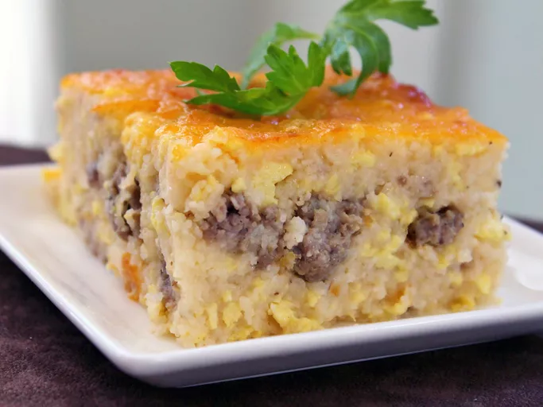

Southern Grits Casserole

Description
Southern Grits Casserole is a hearty and comforting dish that embodies the soulful flavors of the American South. This casserole brings together the humble yet versatile grits with a rich blend of cheeses and savory seasonings, creating a dish that's both satisfying and indulgent.
Ingredients
- 6 cups water
- 2 cups uncooked grits
- 3 cups shredded Cheddar cheese, divided
- ½ cup butter, cut into pieces, divided
- 1 pound ground pork sausage
- 12 large eggs
- ½ cup milk
- ½ cup milk
Steps
- Preheat the oven to 350 degrees F (175 degrees C). Lightly grease a large baking dish.
- Bring water to a boil in a large saucepan; stir in grits. Reduce the heat, cover, and simmer until liquid has been absorbed, about 5 minutes. Mix in 2 cups Cheddar cheese and 1/2 of the butter until melted.
- Cook sausage in a skillet over medium-high heat until browned and crumbly, 5 to 7 minutes. Drain and add to grits mixture.
- Whisk eggs and milk together in a bowl. Pour into the skillet used to cook the sausage. Lightly scramble eggs over medium-low heat, then mix into grits mixture.
- Pour grits mixture into the prepared baking dish. Dot with remaining butter, sprinkle with remaining 1 cup Cheddar, and season with salt and pepper.
- Bake in the preheated oven until lightly browned, about 30 minutes.